Esempio base di aereo ad ala fissa¶
Una guida completa per un aereo con motore + 2 alettoni + 2 flap + elevatore + timone, un servo per ogni superficie, realizzato dall'inizio alla fine con la procedura guidata. Completa prima la Configurazione iniziale della radio.
Passo 1. Conferma le impostazioni del sistema¶
Questo esempio utilizza l'ordine dei canali AETR predefinito.
Passo 2. Identificare i servi/canali necessari¶
La funzione Mix costituisce il cuore della radio — fino a 100 canali di mix, normalmente con i numeri più bassi assegnati ai servi (poiché i numeri dei canali corrispondono direttamente ai canali del ricevitore; il modulo RF interno dell'X20 supporta fino a 24 canali di uscita). I canali più alti restano liberi per canali virtuali o per canali reali aggiuntivi tramite più moduli RF e SBUS. Il nostro modello:
| Funzione | Canali |
|---|---|
| Motore | 1 |
| Alettoni | 2 |
| Flap | 2 |
| Elevatore | 1 |
| Timone | 1 |
(I retrattili vengono aggiunti più avanti, al Passo 10.)
Passo 3. Crea un nuovo modello¶

Da Selezione del modello scegli una categoria, tocca il simbolo + e avvia la procedura guidata Aereo. Per questo esempio scegli l'opzione Ricevitore non stabilizzato.

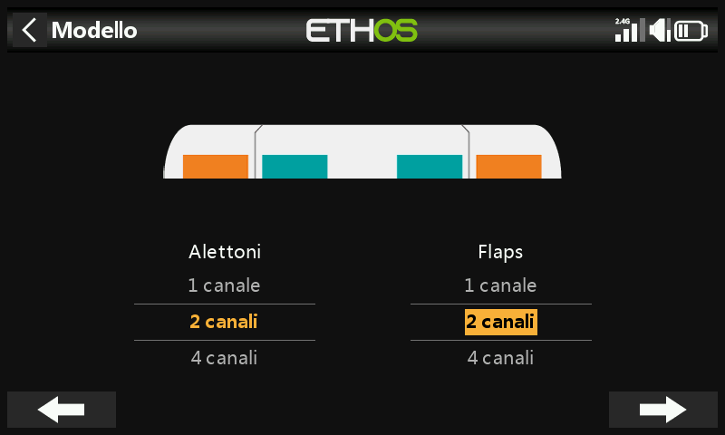
Accetta 1 canale per il motore, quindi 2 canali per gli alettoni e seleziona 2 canali per i flap.


Accetta il piano di coda Tradizionale predefinito, con 1 canale per l'elevatore e 1 per il timone.
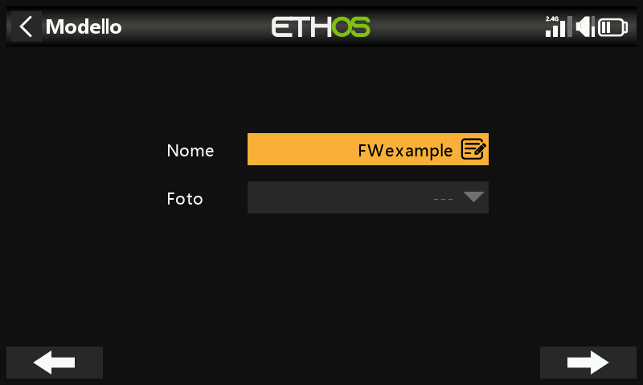

Assegna un nome (ad esempio "FWexample" — fino a 15 caratteri) e segui la procedura guidata fino alla fine: il modello viene creato nel gruppo Airplane e diventa il modello attivo.
Passo 4. Rivedere e configurare i mix¶
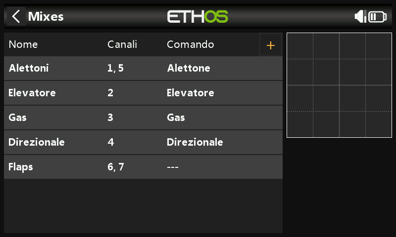
La procedura guidata ha già creato i mix di alettoni (canali 1 e 5),
elevatore, gas, timone e flap (i flap mostrano ---, cioè nessuna sorgente
ancora assegnata).
Alettoni¶
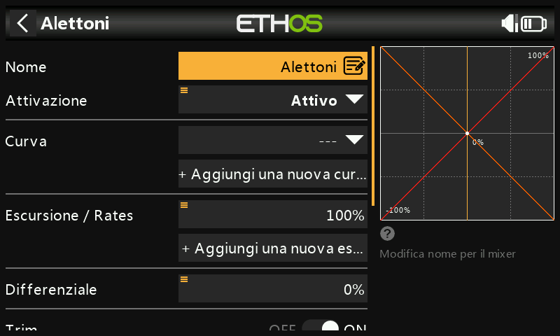
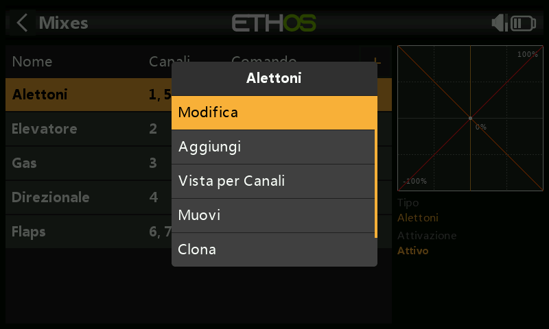
Escursione / Rates — imposta le escursioni prima di far volare qualsiasi modello nuovo: una corsa contenuta (ad esempio il 30%) è adatta al volo sportivo, il 100% pieno al 3D. Aggiungi un'escursione del 60% per la posizione centrale dell'interruttore SB e una del 30% per SB in basso — il valore predefinito (SB in alto) resta al 100%:
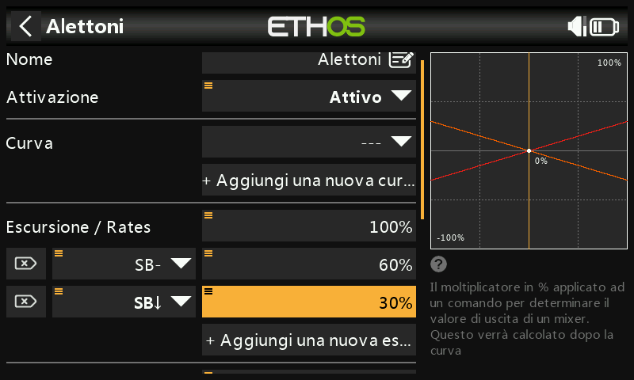
Expo — una risposta lineare può risultare troppo nervosa al centro dello stick; aggiungi delle curve Expo (ad esempio 60%/40%/20% sulle stesse posizioni di SB) per appiattire la risposta vicino al centro senza ridurre la deflessione massima:

Differenziale — se gli alettoni destro e sinistro si muovono verso l'alto o verso il basso della stessa quantità, l'alettone che si muove verso il basso causerà una resistenza maggiore rispetto a quello che si muove verso l'alto, causando l'imbardata del modello nella direzione opposta alla virata ("imbardata avversa"). Un valore positivo di differenziale (il 50% è un valore comune) riduce il movimento verso il basso rispetto a quello verso l'alto, contrastando questo fenomeno:
Per mettere a punto il differenziale in volo, premi a lungo ENT sul valore,
seleziona Usa una sorgente e scegli Pot1:

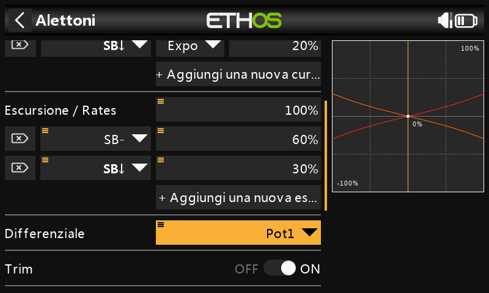
Una volta soddisfatto del valore trovato in volo, premi di nuovo a lungo e seleziona Converti in valore per fissarlo definitivamente:

Trim — puoi scollegare questo mix dal trim associato senza disattivare il trim stesso, rendendolo così disponibile per un altro scopo:
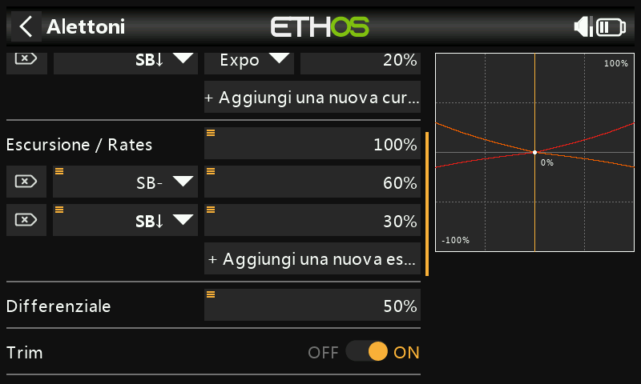
Elevatore e timone¶
Lo stesso schema con tre escursioni + Expo, qui sull'interruttore SC:

Gas¶
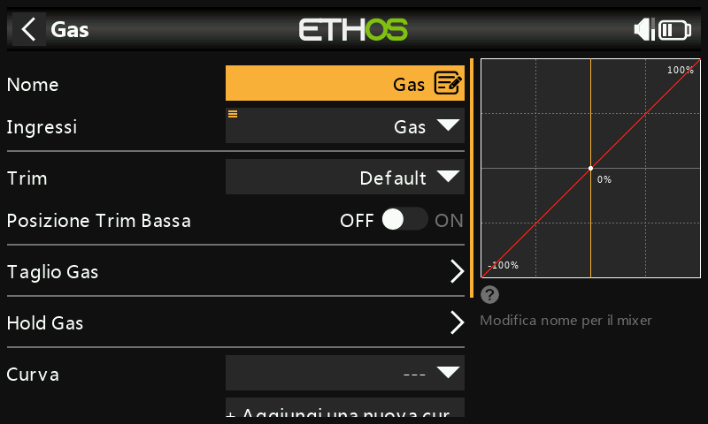
Lascia l'ingresso sullo stick del Gas - Throttle — non servono escursioni né Expo — ma un interruttore di sicurezza è indispensabile: l'avviamento imprevisto di un motore a scoppio o elettrico può provocare lesioni gravi.
Posizione Trim Bassa (motori glow/a scoppio) — regola il regime di minimo indipendentemente dal gas massimo:

Con questa opzione attiva, il canale del gas si trova a −75% con lo stick al minimo; la leva del trim del gas regola quindi il minimo tra −100% e −50%.
Taglio Gas — un blocco di sicurezza. Con l'interruttore SA in basso come condizione attiva (mostrata in grassetto quando è attiva), l'uscita del gas si mantiene a −100% non appena lo stick scende sotto −85%:
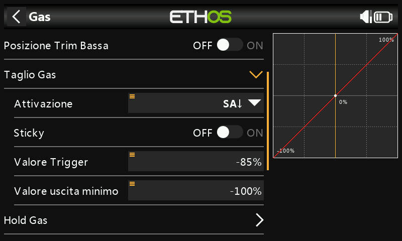
Con l'impostazione Sticky attiva, invece, il gas viene tagliato nell'istante in cui SA va in basso, indipendentemente dalla posizione dello stick:

In entrambi i casi, una volta che la condizione attiva cessa, lo stick deve essere riportato sotto −85% prima che il gas possa aumentare di nuovo: si evita così che il motore salti a un'elevata apertura del gas nel momento in cui l'interruttore di taglio viene rilasciato.
Hold Gas — un taglio di emergenza da qualsiasi posizione dello stick, che porta l'uscita direttamente a −100% (o a un valore configurato) nell'istante in cui la sua condizione è soddisfatta:

Flap¶

Assegna i flap all'interruttore SE e imposta al 100% l'escursione di entrambi i canali di uscita:
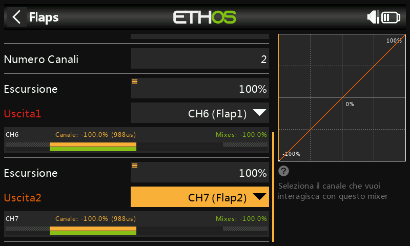
Passo 5. Bind /collegamento il ricevitore¶
Utilizza la funzione RF System per registrare (se il ricevitore è ACCESS) e collegare il ricevitore. Prima di procedere con le Uscite, è consigliabile scollegare i leveraggi dei servi o ridurne temporaneamente la corsa, per evitare danni dovuti al sovraccarico durante l'impostazione dei limiti Min/Max.
Passo 6. Configura le uscite¶
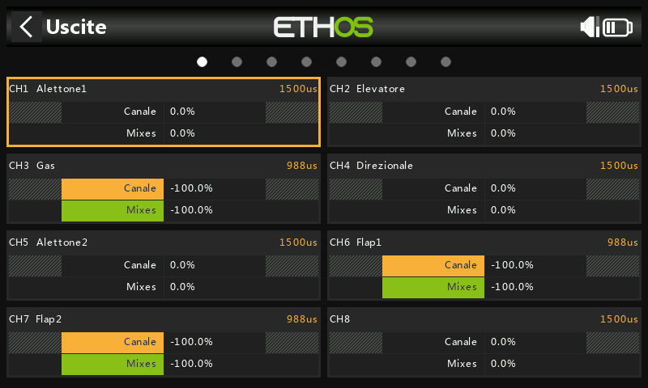
Le Uscite adattano la logica del mixer alla meccanica reale del modello.
Alettone1 — inizia a regolare il punto centrale del servo utilizzando la regolazione Centro PWM, dopo aver ottimizzato i collegamenti meccanici, quindi configura i limiti con le impostazioni Min e Max. Per semplificare le cose, puoi assegnare temporaneamente un potenziometro a Min e poi a Max, come mostrato sopra nell'esempio del differenziale dell'alettone:
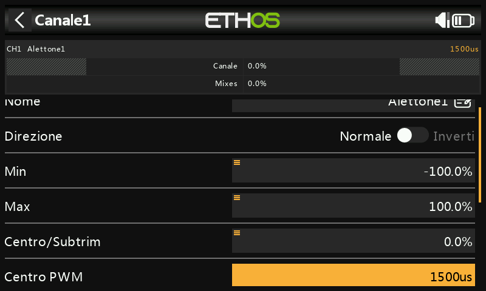
Flap — i flap normalmente richiedono una grande deflessione verso il basso per una frenata efficace; per ottenerla puoi sacrificare una parte della deflessione verso l'alto quando realizzi i leveraggi, per cui i flap saranno in posizione semi-abbassata al centro del servo, e usare quindi Min e Max per ottenere le posizioni desiderate di flap alzati e flap pieni. Una curva a 5 punti è il modo consueto per correggere eventuali disallineamenti tra flap e alettoni. Infine, utilizza il Bilanciamento dei canali per sincronizzare il movimento delle superfici di destra e sinistra, come gli alettoni e i flap.
Passo 7. Introduzione alle modalità di volo¶
Le modalità di volo permettono a un modello di avere impostazioni diverse per ogni compito: l'interruttore della modalità di volo diventa un po' come cambiare le marce in un'automobile. Delle 20 disponibili, questo esempio ne usa tre: Default, Flaps Half (interruttore SE-mid) e Flaps Full (interruttore SE-Up). La prima modalità di volo che ha la condizione attiva su ON è quella attiva; la modalità Default non ha alcuna condizione ed è attiva quando nessuna altra lo è — questo spiega perché non ha un'opzione di selezione degli interruttori. Tempi di dissolvenza in entrata e in uscita di 1 secondo rendono più graduale la transizione all'estensione dei flap.
Passo 8. Configurare i Trims¶
Due modi per gestire il trim dell'elevatore che varia con la posizione dei flap:
Trim indipendenti per modalità di volo — l'opzione più semplice: il trim dell'elevatore diventa completamente indipendente per ogni modalità di volo e commuta automaticamente quando azioni i flap sull'interruttore SE. Poiché in ogni modalità devi regolare l'elevatore "da zero", la funzione Instant trim è di aiuto: regola prima per il volo normale, poi atterra e usa quel valore come punto di partenza per le modalità con i flap.
Trim base con offset — si esegue il trim una sola volta in Default, e la compensazione dell'elevatore di ciascuna modalità flap viene aggiunta come offset:
- Imposta lo Step del trim su Medio (per raggiungere più rapidamente il trim desiderato; potrai ridurlo in seguito per una regolazione più precisa), il Modo su Personalizzata e aggiungi un nuovo comportamento.
- Come Condizione attiva seleziona
FM1(Flaps Half)e come modo Offset + Default: nella modalità Flaps Half il valore di trim sarà la somma del trim base o predefinito più il trim di offset risultante dalle regolazioni effettuate mentre quella modalità è attiva:

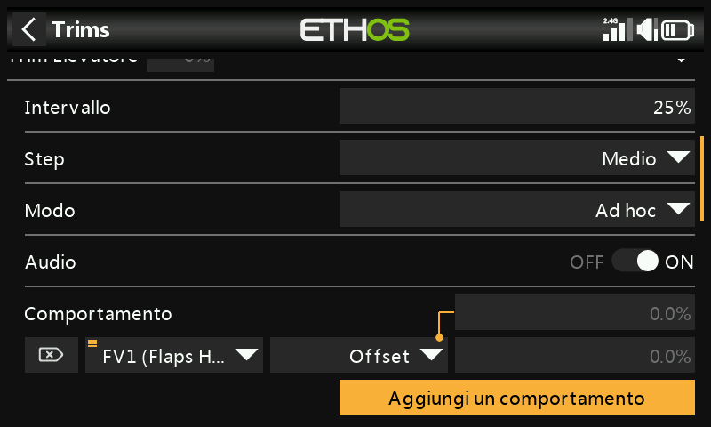
- Ripeti per
FM2(Flaps Full):
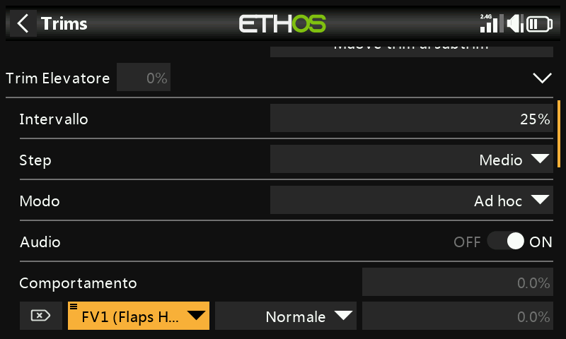
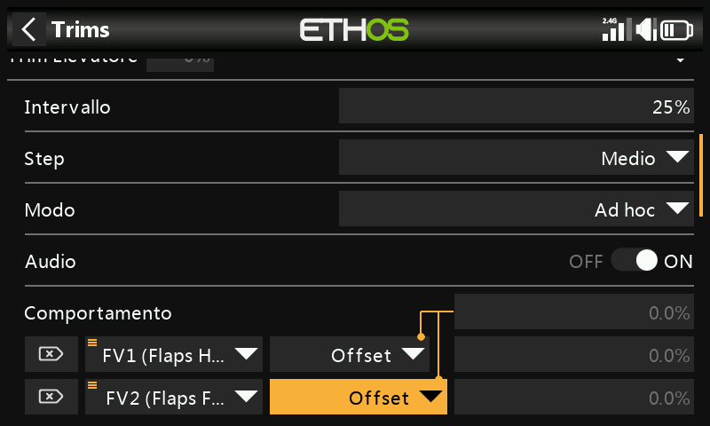
Ogni modalità flap può ora essere regolata in modo indipendente; tuttavia, se in seguito regoli il trim di base utilizzato nella modalità Default (ad esempio a causa della deriva termica del servo), anche i due trim delle modalità flap verranno modificati automaticamente della stessa quantità.
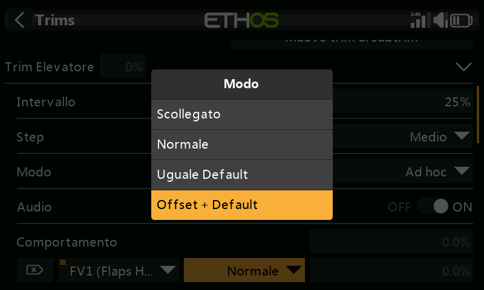
Passo 9. Imposta un timer per le batterie di volo¶
Nella sezione Timer modifica il Timer 1: modalità Tim.Giu, valore iniziale di 5 minuti, in funzione ogni volta che Gas attivo è vero (a condizione che non sia in fase di reset). Facoltativamente puoi assegnare una sorgente di temporizzazione proporzionale (ad esempio lo stick del gas), così al massimo dell'accelerazione il timer conterà in tempo reale, ma rallenterà man mano che il gas viene ridotto.
Passo 10. Aggiungi una Mix per i retrattili¶

Tocca un mix, seleziona Aggiungi mix → Mix libero, chiamalo "Retracts", imposta l'attivazione su Attivo e la sorgente sull'interruttore SF. L'azione di miscelazione predefinita di escursione = 100% va bene: questo assegna, ad esempio, il canale 8 ai retrattili:
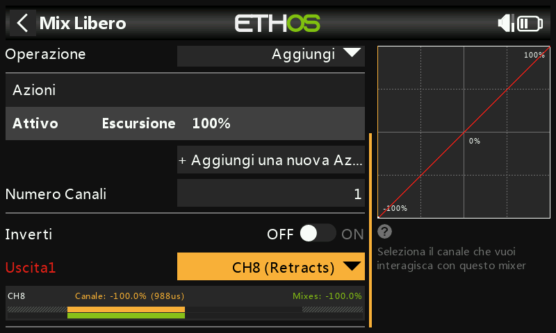